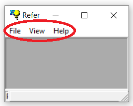

1) Menu bar located on the top of the window just below the title bar:

2) Icons organized in toolbars located
in the upper or left side of the corresponding parent or child window:
1.5.2 Menus
1.5.2.1 Menus
REFER implements a WIMP-style graphical user interface, which stands for "Windows, Icons, Menus, Pointer" in human-computer interaction. While this approach may seem contradictory given that the ultimate goal is to provide a complete pen-based interface, REFER is intended as a software laboratory, a platform to test ideas and refine algorithms that will ultimately provide the necessary know-how to develop stand-alone, robust, and user-friendly pen-based applications.
Two types of menus are available in REFER, which are equivalent and can be used interchangeably:
1) Menu bar located on the top of the window just below the title bar:

2) Icons organized in toolbars located in the upper or left side of the corresponding parent or child window:

Note that toolbars do not include all the available commands. Some specific actions can only be accessed through the menu bar.